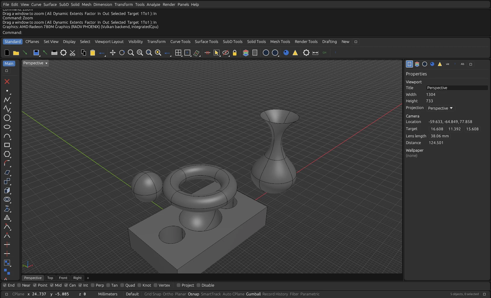
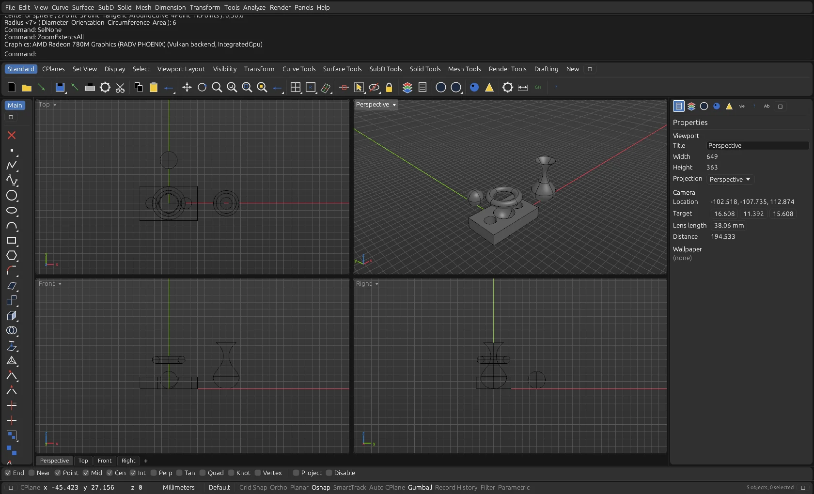
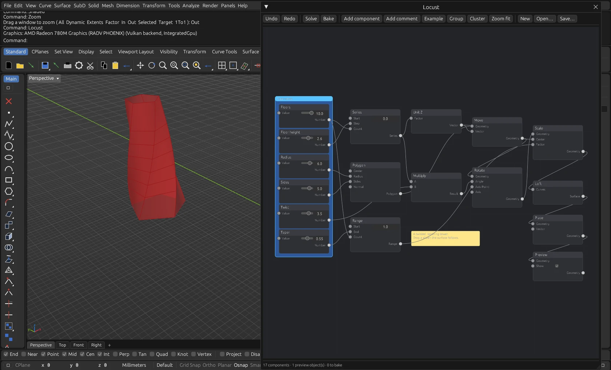

Curves and surfaces
Lines, arcs, interpolated and control-point curves; extrude, revolve, loft, sweep, network, edge and blend surfaces.
Triceratops is a precise 3D modeller for designers and engineers: exact curves, surfaces and solids, a fast command line, native .3dm files, and Locust, a node editor for algorithmic design.
Linux · Windows · macOS

Triceratops follows the interaction model of professional NURBS CAD tools, so you can type a command, click its options and keep working.
Lines, arcs, interpolated and control-point curves; extrude, revolve, loft, sweep, network, edge and blend surfaces.
Booleans that keep the original NURBS surfaces and only add trim curves, plus closed polysurfaces, SubD-style meshes and meshes.
Exact surface/surface intersections, projection of curves onto any surface, and trimming or splitting by any number of curves.
Prompts with clickable options, object snaps, SmartTrack, a gumball and four synchronised viewports. Enter repeats the last command.
Native .3dm through openNURBS, plus STEP, IGES, DXF/DWG, OBJ, STL, glTF, 3MF, SVG, PDF and many more.
Dockable panels, tear-off toolbars, light, dark and Blender-style themes, and layouts that are saved between sessions.
Every screenshot on this page is a real Triceratops window, generated from a command script.

Locust is a built-in visual programming editor. Wire components together, drag a slider, and the model in the viewport updates as you go.
Type Locust in the command line to open it. A worked example loads on the first run.

Claude, Codex and other MCP clients can drive the Triceratops window you have open. The assistant runs real Triceratops commands, the viewports update as it works, and every step can be undone.
# Claude Code claude mcp add triceratops -- ~/Triceratops.AppImage mcp # Codex codex mcp add triceratops -- ~/Triceratops.AppImage mcp # then ask: "In Triceratops, make a 60×40×8 mm plate with two 6 mm holes 40 mm apart and a 30 mm high flange along one long edge."
Free for everyone, released under the MIT license. Pick your system:
chmod +x Triceratops-*.AppImagetriceratops.exe.All files are on the releases page.
The NURBS kernel, the document model and the application are separate Rust crates. Bug reports and pull requests are welcome.
Read the build guide# Rust, CMake and a C++ compiler are required git clone https://github.com/libano23/triceratops-rs cd triceratops-rs cargo run --release # open a model, or run a command script cargo run --release -- model.3dm cargo run --release -- --script commands.txt